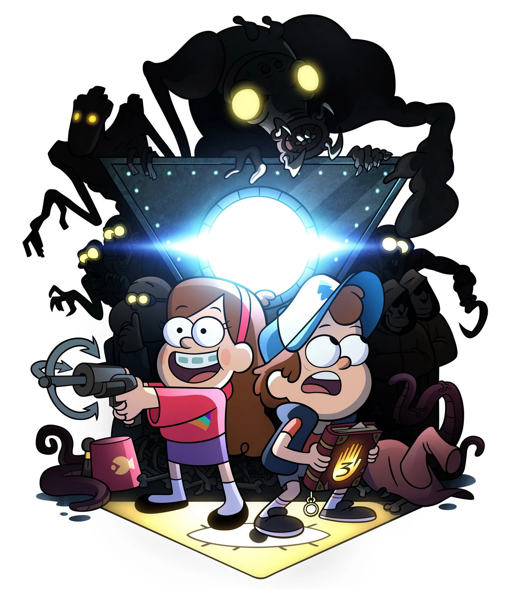

When
June 20
Around 4:00 PM — or whenever during the day
When June 20 · ~4:00 PM (or whenever during the day)
Birthday Party in the Woods

Official Shack field team — party attendance mandatory (ish).
Something weird is happening in the woods of Pennsylvania — and you're invited to celebrate.
Join us for Evgeny Toropov's birthday at a cabin deep in the forest. Bring snacks, stories, and a healthy sense of wonder.
June 20
Around 4:00 PM — or whenever during the day
The Cabin
875 Turkey Ridge Lane
Leeper, PA 16233
Optional
Guests are welcome to crash at the cabin if they want to keep the mystery going past sunset.